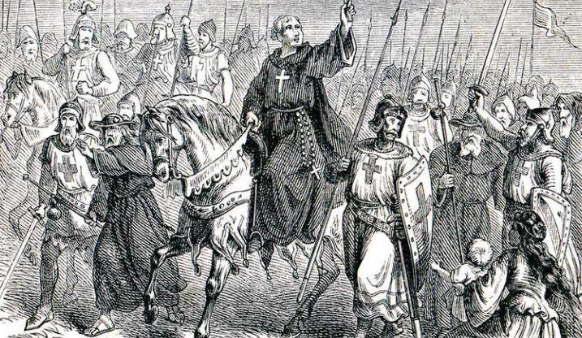

Кресто́вые походы — серия религиозных военных походов XI—XV веков из Западной Европы против мусульман и не только[1].
Она сказала: Меня сложно найти...
2logn2x2e⋅10-3
Стоимость меча: 10000₽ 10000¥
В узком смысле — походы 1096—1272 годов в Палестину, направленные на освобождение святынь христианства[2] (в первую очередь Иерусалима с Гробом Господним), против сельджуков.
В более широком смысле — также и другие походы, провозглашаемые римскими папами, в том числе более поздние, проводившиеся с целями обращения в христианство язычников  Прибалтики и подавления еретических и антиклерикальных течений в Европе (против катаров, гуситов и др.), а также походы на Османскую империю в более позднее время.

Покорив мусульманские области Ближнего Востока, сельджуки (названные так по имени своего вождя Сельджука) не остановились и вторглись на византийские территории. В Византии вспыхнула паника. Её император Роман IV попытался остановить завоевателей, но в 1071 году, в битве при городе Манцикерте, византийское войско потерпело сокрушительное поражение, а сам он попал в плен. После этого у византийцев уже не было сил сопротивляться. Сельджуки, постепенно продвигаясь на запад, отняли у Византии почти всю Малую Азию.
Хлынув в огромном количестве на христианские города и деревни, сельджуки нещадно их грабили, разоряли и жгли. Пылали и рушились церкви и монастыри. Завоеватели оскверняли христианские святыни, подвергали изощрённым пыткам, а затем убивали священников и монахов, принуждали местное население принимать ислам, истребляя тех, кто сопротивлялся. В 1071 году в руки сельджуков перешёл Иерусалим, город Христа, со всеми главными святынями христиан. Несколько столетий до этого святой город находился под властью арабов, которые терпимо относились к местным христианам и паломникам, постоянно прибывавшим из Европы для поклонения Гробу Господню. Новые хозяева города стали подвергать поруганию христианские храмы, ущемлять права местных христиан, чинить препятствия паломникам: их могли оскорбить, избить, продать в рабство, убить. Даже ходить по улицам города христианам стало опасно. Особенно безжалостно завоеватели издевались над иерусалимским патриархом, обращаясь с ним как с последним рабом. Однажды сельджуки, схватив его за бороду, стащили с престола на пол, а затем протащили по улицам на потеху толпе мусульман и без всякого повода засадили в темницу.
В Европе знали о затруднениях Византии. Начиная с 60-х годов XI века римские папы несколько раз выступали с идеей похода в помощь ей. Эта идея все больше и больше распространялась среди западных христиан. Огромную роль здесь сыграли известия о бесчинствах сельджуков в Иерусалиме, приносимые из Святой Земли многочисленными паломниками. От рассказов о творимых там злодеяниях сердца слушателей сжимались, наполнялись гневом и стремлением покарать нечестивцев.
В 1096 году в южнофранцузском городе Клермоне папа Урбан II начал страстные проповеди об освобождении Иерусалима от турок-сельджуков. Народ прислушивался к его призывам. Название «крестоносцы» появилось потому, что участники крестовых походов нашивали себе на одежду кресты.
В ноябре 1095 году в Клермоне состоялся церковный собор — собрание, на котором присутствовали все видные представители католической церкви: кардиналы, архиепископы, епископы, настоятели монастырей. Это было событие первоочередной важности, на которое съехалось также много рядовых священников, монахов и огромное множество мирян, как знатных сеньоров, рыцарей, так и простолюдинов. Именно здесь Урбан II и призвал к походу на Восток, чтобы освободить Гроб Господень и другие святыни, помочь Византии.
Преемник Григория, папа Виктор III обновил[когда?] призыв предшественника. Жители Пизы, Генуи, некоторых других итальянских городов, страдавших от морских набегов мусульман, снарядили флот, отбывший к побережью Африки. Экспедицией были сожжены два города в Тунисе, но этот эпизод не получил широкого резонанса.
Истинным вдохновителем массового крестового похода стал простой нищий отшельник Пётр Амьенский, по прозвищу Пустынник, родом из Пикардии. При посещении Голгофы и Гроба Господня, зрелище всяческих притеснений палестинских братьев по вере возбудило в нём сильнейшее негодование. Добившись от патриарха писем с мольбой о помощи, Пётр отправился в Рим к папе Урбану II, а затем, надев рубище, без обуви, с непокрытой головой и распятием в руках — по городам и весям Европы, проповедуя где только можно о походе для освобождения христиан и Гроба Господня. Простые люди, тронутые его красноречием, принимали Петра за святого, считали счастьем даже отщипнуть клочок шерсти от его ослика на память. Таким образом идея распространилась весьма широко и стала популярной.
Незадолго до этого византийский император Алексей I Комнин обратился к Урбану с просьбой помочь отразить нападение воинственных турок-сельджуков. Восприняв нашествие мусульман-турок как угрозу христианству, Папа согласился помочь императору, а также, желая привлечь на свою сторону общественное мнение в борьбе с другим претендентом на папский престол, поставил дополнительную цель — отвоевать у сельджуков Святую землю. В Клермоне желающие приносили торжественные клятвы и в знак обета нашивали на свои одежды кресты из полосок красной ткани. Отсюда и пошло имя «крестоносцы» и название их миссии — «Крестовый поход»[3].
Первый поход на волне всеобщего воодушевления в целом достиг своих целей. В дальнейшем Иерусалим и Святая земля были вновь захвачены мусульманами, и Крестовые походы предпринимались для их освобождения. Последний (девятый) Крестовый поход в первоначальном значении состоялся в 1271—1272 годах. Последние походы, которые также назывались «крестовыми», предпринимались в XV веке и были направлены против чешских гуситов и турок-османов.
Быстрые успехи ислама в первом столетии его существования грозили серьёзной опасностью для европейского христианства: арабы завоевали Сирию, Палестину, Египет, северную Африку, Испанию. Начало VIII века было критическим моментом: на Востоке арабы завоевали большую часть ближневосточных территорий Византии вплоть до границ Малой Азии и уже грозили этому жизненно важному для империи региону, а на Западе пытались проникнуть за Пиренеи. Победы Льва Исавра и Карла Мартелла остановили арабскую экспансию, а дальнейшее распространение ислама было остановлено начавшимся вскоре политическим разложением мусульманского мира. Халифат раздробился на части, враждовавшие друг с другом.
Во второй половине X века Византийская империя получила даже возможность возвратить кое-что из потерянного ранее: Никифор Фока отвоевал у арабов Крит, часть Сирии, Антиохию. В XI веке положение дел снова изменилось в пользу мусульман. Византийский престол после смерти Василия II (1025) занимали слабые императоры, притом беспрерывно сменявшиеся. Слабость верховной власти оказалась тем более опасной для Византии, что как раз в это время восточной империи стала грозить серьёзная опасность и в Европе, и в Азии. В Передней Азии сельджуки совершали своё наступательное движение на Запад.
Под предводительством Шакир-бека (ум. 1059) и Тогрул-бека (ум. 1063) они подчинили своей власти большую часть Ирана, Армении и Месопотамии. Сын Шакира Алп-Арслан опустошил значительную часть Малой Азии (1067—1070) и взял в плен при Манцикерте императора Романа Диогена (1071). Между 1070 и 1081 годами сельджуки отняли у египетских Фатимидов Сирию и Палестину (Иерусалим — в 1071—1073 годах, Дамаск в 1076 году), а Сулейман, сын Кутулмыша, двоюродного брата Тогрул-бека, отнял к 1081 году у византийцев всю Малую Азию; Никея стала его столицей. Наконец, турки взяли и Антиохию (1085). Снова, как в VIII веке, враги были под самым Константинополем.
В то же время европейские провинции империи подвергались (с 1048 года) беспрерывным вторжениям переселившихся на Балканы кочевых печенегов и огузов, которые производили страшные опустошения иногда под самыми стенами столицы. Особенно тяжёлым был для империи 1091 год: турки, с Чахой во главе, готовили нападение на Константинополь с моря, а печенежское войско стояло на суше под самой столицей. Император Алексей Комнин не мог надеяться на успех, ведя борьбу одними своими войсками: его силы были в значительной степени исчерпаны за последние годы в войне с итальянскими норманнами, пытавшимися утвердиться и на Балканском полуострове.
На Западе к концу XI века целый ряд причин создал настроение и обстановку, благоприятные для призыва на борьбу с мусульманами, с каким обратился туда император Алексей I Комнин: чрезвычайно усилилось религиозное чувство и развилось аскетическое настроение, находившее себе выражение во всякого рода духовных подвигах, между прочим и во многочисленных паломничествах.
К тому же в 1054 году произошёл церковный раскол — католики и православные предали друг друга анафеме.
Особенно много паломников издавна направлялось в Палестину, ко Гробу Господню; в 1064 году, например, архиепископ майнцский Зигфрид Майнцский отправился в Палестину с семитысячной толпой пилигримов. Арабы не препятствовали таким паломничествам, но христианское чувство иногда сильно оскорблялось проявлениями мусульманского фанатизма: так, египетский халиф Аль-Хаким велел в 1009 году разрушить храм Святого Гроба[4]. Уже тогда, под впечатлением этого события, папа Сергий IV проповедовал священную войну, но безуспешно (после смерти Аль-Хакима, впрочем, разрушенные храмы были восстановлены).
Утверждение в Палестине турок сделало паломничества христиан гораздо более трудными, дорогими и опасными: пилигримам гораздо чаще приходилось становиться жертвами мусульманского фанатизма. Рассказы возвращавшихся пилигримов развивали в религиозно настроенных массах западного христианства чувство скорби о печальной участи святых мест и сильное негодование против неверных. Кроме религиозного воодушевления были и другие мотивы, могущественно действовавшие в том же направлении. В XI веке ещё не совсем заглохла страсть к передвижениям, составлявшая как бы последние отголоски великого переселения народов (норманны, их передвижения). Утверждение феодального строя создавало в рыцарском классе значительный контингент лиц, не находивших на родине приложения своим силам (например, младшие члены баронских семей) и готовых идти туда, где была надежда найти что-нибудь лучшее. Тягостные социально-экономические условия увлекали в крестовые походы множество людей из низших слоёв общества. В некоторых странах Запада (например, во Франции, которая и давала наибольший контингент крестоносцев) в XI веке положение народных масс стало ещё более невыносимым вследствие целого ряда стихийных бедствий: наводнений, неурожаев, повальных болезней (эти события получили название «семь тощих лет»). Богатые торговые города Италии готовы были поддерживать крестоносные предприятия в надежде на значительные торговые выгоды от утверждения христиан на Востоке.
Папство, только что усилившее аскетической реформой свой нравственный авторитет на всем Западе и усвоившее себе идею единого Божьего царства на земле, не могло не откликнуться на призыв, обращённый к нему из Константинополя, в надежде стать во главе движения и, может быть, получить духовную власть на Востоке. Наконец, западные христиане давно были возбуждены против мусульман борьбой с ними в Испании, Италии и Сицилии. Для всей южной Европы мусульмане были хорошо знакомым, наследственным врагом. Все это способствовало успеху обращения императора Алексея I Комнина, который уже около 1089 года находился в отношениях с папой Урбаном II и готов был, по-видимому, положить конец церковному раздору, чтобы получить помощь от латинского Запада. Зашла речь о соборе в Константинополе для этой цели; папа освободил Алексея от отлучения, до тех пор лежавшего на нём, как на схизматике. Когда в 1091 году папа находился в Кампании, при нём были послы Алексея.
В марте 1095 года папа ещё раз выслушал послов Алексея (на соборе в Пиаченце), а осенью того же года был созван собор в Клермоне (во Франции, в Оверни). В уме папы Урбана II мысль о помощи Византии приняла ту форму, которая особенно должна была прийтись по душе массам. В речи, которую он произнёс в Клермоне, политический элемент был отодвинут на задний план перед элементом религиозным: Урбан II проповедовал поход для освобождения от неверных Святой земли и Гроба Господня. Речь папы в Клермоне 26 ноября 1095 года[5][6] имела громадный успех: многие тут же дали обет идти против неверных и нашили себе на плечо кресты, отчего и получили название «крестоносцев», а походы — «крестовых». Так был дан толчок движению, которому суждено было остановиться лишь два столетия спустя.
Пока на Западе зрела мысль о Крестовом походе, император Алексей освободился от опасности, вынудившей его искать помощи на Западе. В 1091 году он истребил печенежскую орду при помощи половецких ханов Тугоркана и Боняка; морское предприятие Чахи также кончилось неудачно (Чаха вскоре был убит по приказанию никейского султана). Наконец, Алексею удалось в 1094—1095 годах освободиться и от опасности, грозившей ему со стороны его недавних союзников — половцев. Непосредственная опасность для Византии прошла как раз в то время, когда с Запада стали прибывать массы первых крестоносцев, на которые Алексей смотрел теперь с тревогой. Помощь Запада принимала слишком широкие размеры; она могла грозить самой Византии, ввиду вражды между латинским Западом и греческим Востоком.
Проповедь Крестового похода имела на Западе необыкновенный успех. Во главе движения встала церковь: папа назначил своим легатом при крестоносном войске епископа Пюи Адемара, который одним из первых принял в Клермоне крест. Принявшие крест, как пилигримы, принимались церковью под её покровительство. Кредиторы не могли требовать с них долгов во время их путешествия; захватывавшие их имущество отлучались от церкви; всем крестоносцам, которые шли в Святую землю, побуждаемые к тому благочестием, а не стремлением к приобретению почестей или богатства, отпускались грехи. Уже зимой с 1095 на 1096 год собрались большие массы плохо или почти вовсе не вооружённых крестоносцев из беднейших классов. Во главе их стали Пётр Пустынник и Вальтер Голяк (или Готье-нищий). Часть этой толпы достигла Константинополя, но многие погибли ранее. Греки переправили крестоносцев в Азию, где они почти все были истреблены сельджуками. Несколько позднее начался настоящий Первый крестовый поход.
Первый поход начался в 1096 году. Во главе многочисленного и хорошо вооружённого ополчения находились Раймунд IV, граф Тулузский (он вёл войска из южной Франции, и к нему примкнул папский легат), Гуго де Вермандуа (брат французского короля Филиппа I), Этьен (Стефан) II, граф Блуа и Шартра, герцог Нормандии Роберт III Куртгёз, граф Фландрии Роберт II, Готфрид Бульонский, герцог Нижней Лотарингии, с братьями Евстахием (Эсташем) III, графом Булони, и Балдуином (Бодуэном), а также племянником Балдуином (Бодуэном) Младшим, Боэмунд Тарентский (сын Роберта Гвискара), с племянником Танкредом. Число крестоносцев, собравшихся разными путями в Константинополе, составляло несколько десятков тысяч. В Константинополе большая часть крестоносных вождей признали свои будущие завоевания, как части восточной империи, в ленной зависимости от Алексея и дали ему соответствующую присягу. Алексею было нелегко добиться этого: он был вынужден даже прибегнуть к вооружённой силе (так он принудил к присяге Готфрида Бульонского). Их войска не были единой сплочённой армией — каждый идущий в поход феодал привлекал своих вассалов, а за ними шли сорвавшиеся с насиженных мест крестьяне.
В апреле 1097 года крестоносцы перешли Босфор. Вскоре византийцам сдалась Никея, а 1 июля крестоносцы разбили при Дорилее султана Килидж-Арслана и этим проложили себе путь через Малую Азию. Двигаясь далее, крестоносцы нашли себе драгоценных союзников против турок в князьях Малой Армении, которых они стали всячески поддерживать. Балдуин, отделившись от главного войска, утвердился в Эдессе. Для крестоносцев это было очень важно, по положению города, который составлял с тех пор их крайний восточный форпост. В октябре 1097 года крестоносцы осадили Антиохию, которую им удалось взять лишь в июне следующего года. В Антиохии крестоносцы в свою очередь были осаждены эмиром моссульским Кербогой и, терпя голод, подвергались большой опасности; им удалось, однако, выйти из города и разбить Кербогу. После продолжительной распри с Раймундом Антиохией завладел Боэмунд, которому удалось ещё до падения её вынудить у остальных крестоносных вождей согласие на передачу ему этого важного города. Пока шли споры из-за Антиохии, в войске, недовольном промедлением, произошло волнение, которое заставило князей, прекратив распри, двинуться далее. То же повторялось и потом: в то время, как войско рвалось к Иерусалиму, вожди спорили из-за каждого взятого города.
7 июня 1099 года перед глазами крестоносцев открылся, наконец, святой город, а 15 июля они взяли его, причём произвели страшную резню среди мусульман. Власть в Иерусалиме получил Готфрид Бульонский. Разбив под Аскалоном египетское войско, он обеспечил на некоторое время с этой стороны завоевания крестоносцев. После смерти Готфрида королём иерусалимским стал Балдуин Старший, передавший Эдессу Балдуину Младшему. В 1101 году в Малую Азию явилось второе большое крестоносное войско из Ломбардии, Германии и Франции, во главе которого шло много знатных и богатых рыцарей; но большая часть этого войска была истреблена соединёнными силами нескольких эмиров.
Между тем крестоносцы, утвердившиеся в Сирии (число их увеличивалось новыми пилигримами, прибывавшими почти непрерывно), должны были вести тяжёлую борьбу с соседними мусульманскими владетелями. Боэмунд был взят одним из них в плен и выкуплен армянами. Кроме того, крестоносцы вели уже с весны 1099 года войну с греками из-за приморских городов. В Малой Азии византийцам удалось возвратить себе значительную территорию; их успехи могли быть здесь ещё значительнее, если бы они не тратили своих сил в борьбе с крестоносцами из-за отдалённых сирийских и киликийских областей. Наконец, с самого начала шла борьба и между самими крестоносцами из-за обладания разными городами. Значительную поддержку иерусалимскому королевству оказали образовавшиеся вскоре духовно-рыцарские ордена тамплиеров и госпитальеров (иоаннитов). Серьёзная опасность стала грозить крестоносцам, когда власть в Мосуле получил (1127) Имад-ад-Дин Занги. Он соединил под своей властью несколько мусульманских владений, лежавших около владений крестоносцев, и образовал обширное и сильное государство, занимавшее почти всю Месопотамию и значительную часть Сирии. В 1144 году он взял Эдессу, несмотря на героическое сопротивление защитников города. Весть об этом бедствии вновь вызвала крестоносное воодушевление на Западе, выразившееся во 2-м крестовом походе. Проповедь Бернарда Клервосского подняла прежде всего массу французских рыцарей, во главе которых стал король Людовик VII; потом Бернарду удалось привлечь к крестовым походам и германского императора Конрада III. С Конрадом пошли его племянник Фридрих Швабский и много германских князей.
Государства крестоносцев на Востоке в 1140 году
По окончании 1-го крестового похода на территории Леванта были основаны четыре христианских государства.
Графство Эдесса — первое государство, основанное крестоносцами на Востоке. Было основано в 1098 году Балдуином I Булонским. После завоевания Иерусалима и создания королевства. Просуществовало до 1146 года. Столицей его был город Эдесса.
Княжество Антиохия — было основано Боэмундом I Тарентским в 1098 году после взятия Антиохии. Княжество просуществовало до 1268 года.
Иерусалимское королевство, просуществовало вплоть до падения Акры в 1291 году. В подчинении у королевства находилось несколько вассальных сеньорий, в том числе четыре наиболее крупные:
Княжество Галилеи
Графство Яффы и Аскалона
Трансиордания — сеньория Крака, Монреаля и Сент-Авраама
Сеньория Сидона
Графство Триполи — последнее из государств, основанных в ходе Первого крестового похода. Было основано в 1105 году графом Тулузы Раймундом IV. Графство просуществовало до 1289 года.
Государства крестоносцев полностью охватывали территорию, через которую шла в то время торговля Европы с Индией и Китаем, никакой лишней территории не занимая. Египет оказывался отрезан от этой торговли. Доставка грузов в Европу наиболее экономичным путём из Багдада, минуя государства крестоносцев, стала невозможна. Таким образом, крестоносцы приобрели в некотором роде монополию в данного рода торговле. Создались условия для развития новых торговых путей между Европой и, например, Китаем, таких, как путь по Волге с перевалкой в реки, впадающие в Балтику, и волго-донской путь.
В этом можно усматривать причины смещения политического центра Руси как раз после первого крестового похода в район, где происходила перевалка международных грузов из бассейна Волги в бассейн Западной Двины, а также причины экономического и политического подъёма Волжской Булгарии. Последовавший захват крестоносцами устья Западной Двины и Немана, захват ими Константинополя, через который проходили грузы волго-донского пути и пути по реке Куре, а также попытку шведов захватить устье Невы, можно также расценивать как стремление установить контроль над торговыми путями данного вида торговли. Экономический подъём в то время северо-западной части Западной Европы против южной, стал причиной того, что для европейцев международная торговля с Востоком через Балтику и далее через Северо-Восточную Русь становилась более экономически выгодной. Возможно, именно в этой связи крестовые походы в Святую Землю утратили популярность среди европейцев, и дольше всего крестоносные государства просуществовали именно в Прибалтике, исчезнув лишь тогда, когда европейцы открыли прямые морские пути в Китай и Индию.
После первого крестового похода началось усиление мусульман, угрожавших христианским государствам. В частности, эмир Мосула Имад ад-Дин Занги в 1144 году взял Эдессу и завоевал всё Эдесское графство. Второй крестовый поход стал ответом христиан на этот удар.
Король Германии Конрад III Гогенштауфен сухим путём (через Венгрию) прибыл в Константинополь, в середине сентября 1147 года переправил войска в Азию, но после столкновения с сельджуками при Дорилее вернулся к морю. Французы, напуганные неудачей Конрада, пошли вдоль западного берега Малой Азии; потом король и знатные крестоносцы на кораблях отплыли в Сирию, куда и прибыли в марте 1148 года. Остальные крестоносцы хотели пробиться сухим путём и по большей части погибли. В апреле прибыл в Акру Конрад; но осада Дамаска, предпринятая вместе с иерусалимцами, пошла неудачно, вследствие эгоистической и недальновидной политики последних. Тогда Конрад, а осенью следующего года и Людовик VII, возвратились на родину. Эдесса, взятая было по смерти Имад-ад-Дина христианами, но вскоре опять отнятая у них его сыном Нур-ад-Дином, теперь была уже навсегда потеряна для крестоносцев.
Следовавшие за тем 4 десятилетия были тяжёлым временем для христиан на Востоке. В 1176 году византийский император Мануил потерпел страшное поражение от сельджукских турок при Мириокефале. Нур-ад-Дин овладел землями, лежавшими на Северо-востоке от Антиохии, взял Дамаск и стал близким и крайне опасным соседом для крестоносцев. Его полководец Асад ад-Дин Ширкух утвердился в Египте. Крестоносцы были окружены «кольцом» врагов. По смерти Ширкуха звание визиря и власть над Египтом перешла к его знаменитому племяннику Саладину, сыну Айюба.
Католическая церковь была силой, которая объединяла всех участников похода.
Саладин (собственно Салах-ад-дин Юсуф ибн-Айюб) по смерти халифа правил страной неограниченно, признавая лишь номинально верховную власть атабека Нур ад-Дина. По смерти последнего (1174) Саладин подчинил себе Дамаск, всю мусульманскую Сирию, большую часть Месопотамии и принял титул султана.
В это время в Иерусалиме правил молодой король Балдуин IV. Несмотря на тяжёлую болезнь — проказу — он успел показать себя мудрым и дальновидным полководцем и дипломатом. При нём установилось некоторое равновесие между Иерусалимом и Дамаском. И Балдуин, и Саладин старались избегать решительных сражений. Однако, предвидя скорую смерть короля, при дворе Балдуина нарастали интриги могущественных баронов, самыми влиятельными из которых были Ги де Лузиньян и Рено де Шатильон[7].
В 1185 году Балдуин умер. Ги де Лузиньян женился на его сестре Сибилле и стал королём Иерусалима. Теперь при содействии Рено де Шатильона он начал откровенно провоцировать Саладина на генеральное сражение. Последней каплей, переполнившей чашу терпения Саладина, стало нападение Рено на караван, в котором следовала сестра Саладина. Это привело к обострению отношений и переходу мусульман в наступление.
В июле 1187 года Саладин взял Тивериаду и нанёс христианам, занявшим высоты Хаттина (около Тивериады), страшное поражение.
Король Иерусалимский Ги де Лузиньян, его брат Амори, Рено де Шатильон и множество рыцарей попали в плен. Саладин овладел затем Акрой, Бейрутом, Сидоном, Кесарией, Аскалоном и другими городами. 2 октября 1187 года его войска вступили в Иерусалим. Только под Тиром, который защищал Конрад Монферратский, Саладин потерпел неудачу. Во власти крестоносцев остались лишь Тир, Триполи и Антиохия. Между тем король Ги, освободившись из плена, двинулся на завоевание Акры. Успехи Саладина вызвали новое движение на Западе, приведшее к 3-му большому крестовому походу. Прежде других двинулись флоты ломбардцев, тосканцев и генуэзцев. Сам король Германии и император Священной Римской империи Фридрих I Барбаросса повёл большую армию. Между крестоносцами и греками не обошлось и теперь без враждебных действий: греки даже заключили союз с Саладином.
В марте 1190 года войска Фридриха переправились в Азию, двинулись на юго-восток и, после страшных лишений, пробились через всю Малую Азию; но вскоре после перехода через Тавр император утонул в реке Салеф. Часть его войска разошлась, многие погибли, остальных герцог Фридрих привёл в Антиохию, а потом к Акре. В январе 1191 года он умер от малярии. Весной прибыли короли французский (Филипп II Август) и английский (Ричард I по прозванию Львиное Сердце) и герцог Леопольд V Австрийский. По дороге Ричард Львиное Сердце победил императора Кипра, Исаака, который вынужден был сдаться; его заключили в сирийский замок, где держали почти до самой смерти, а Кипр попал во власть крестоносцев. Осада Акры шла плохо вследствие раздоров между королями французским и английским, а также между Ги де Лузиньяном и маркграфом Конрадом Монферратским, который заявил, по смерти жены Ги, притязание на иерусалимскую корону и женился на Изабелле, сестре и наследнице умершей Сибиллы.
Только 12 июля 1191 года Акра сдалась после почти двухлетней осады. Конрад и Ги примирились уже после взятия Акры; первый был признан наследником Ги и получил Тир, Бейрут и Сидон. Вскоре после этого отплыл на родину Филипп II с частью французских рыцарей, но Гуго Бургундский, Генрих Шампанский и много других знатных крестоносцев остались в Сирии. Крестоносцам удалось нанести Саладину поражение в битве при Арсуфе, но из-за нехватки воды и постоянных стычек с мусульманскими отрядами армия христиан не сумела отвоевать Иерусалим — король Ричард дважды подходил к городу и оба раза не решился на штурм. Наконец, в сентябре 1192 года было заключено перемирие с Саладином: Иерусалим остался во власти мусульман, христианам было лишь позволено посещать святой город.
Он взял Яффу. Вскоре до него дошли слухи о захвате младшим братом Иоанном власти в Англии, а королем Филиппом — его земель во Франции, после этого Ричард отплыл на родину для возвращения власти[8][9].
Обстоятельством, несколько облегчившим положение крестоносцев, была последовавшая в марте 1193 года смерть Саладина: раздел его владений между его многочисленными сыновьями стал источником междоусобиц среди мусульман. Вскоре, впрочем, выдвинулся брат Саладина, аль-Малик аль-Адиль, который овладел Египтом, южной Сирией и Месопотамией и принял титул султана. После неудачи третьего крестового похода в Святую землю стал собираться король Сицилии Генрих VI Штауфен, принявший крест в мае 1195 года; но он умер в сентябре 1197 года. Некоторые отряды крестоносцев, отправившиеся ранее, всё-таки прибыли в Акру. Несколько ранее императора умер Генрих Шампанский, который был женат на вдове Конрада Монферратского и носил поэтому иерусалимскую корону. Королём выбран был теперь Амори II (брат Ги де Лузиньяна), женившийся на вдове Генриха. Между тем, военные действия в Сирии шли неудачно; значительная часть крестоносцев вернулась на родину. Около этого времени немецкое госпитальное братство св. Марии, основанное во время 3-го крестового похода, было преобразовано в Тевтонский духовно-рыцарский орден.
Кипрское королевство — государство крестоносцев, созданное на Кипре, во время Третьего крестового похода. Просуществовало до 1489 года.